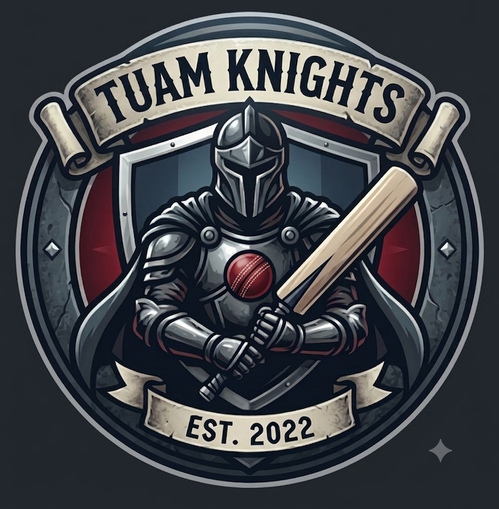

Affiliated with the Connacht Cricket Union (CCU)
Honor, Teamwork, and Excellence — Building the future of cricket in Tuam & County Galway
Become a MemberPromoting competitive & recreational cricket for players of all backgrounds
Established in January 2022 as an Indoor Cricket Team, Tuam Knights Cricket Club has expanded rapidly under the Connacht Cricket Union (CCU). Our mission is to build inclusive opportunities for adults, youth, and women's teams across County Galway.
Core information about Tuam Knights CC
January 2022
Indoor & Outdoor Squads
Connacht Cricket Union
(CCU)
Tuam
County Galway, Ireland
Open to Players, Coaches
& Supporters
Catch up on match reports, announcements, and team updates
The new board and leadership team have been appointed to steer the club's development initiatives for the upcoming season.
Introducing dedicated training sessions designed to support player pathways and community engagement for women in sport.
Check out our regional schedule for upcoming indoor and outdoor competitive league fixtures.
Support Tuam Knights in action
| Date | Match | Competition | Venue |
|---|---|---|---|
| TBD | Tuam Knights vs Galway CC | CCU Regional League | Tuam Ground |
| TBD | Tuam Knights Indoor XI vs Athlone CC | Connacht Indoor Cup | Indoor Sports Complex |
Meet the team managing club operations and growth
Whether you are a beginner, an experienced player, or a supporter, we welcome everyone to our club.
Get In TouchHelp us improve ground facilities, purchase match gear, and expand youth setups.
Facility Development Fund
Donate to the ClubTuam Knights Cricket Club
📧 Email: contact.tuamknightscc@gmail.com
🏏 Affiliated with: Connacht Cricket Union (CCU)
📍 Location: Tuam, County Galway, Ireland